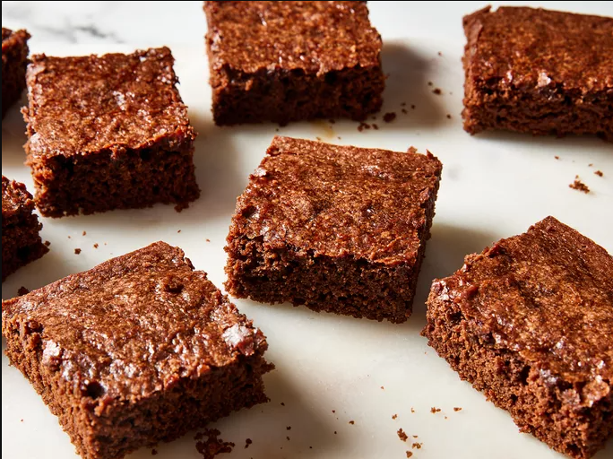

Vegan Brownies

Description
This vegan brownie recipe makes rich, chewy, chocolaty treats with a wonderfully crisp crust.
Ingredients
- 2 cups all-purpose flour
- 2 cups granulated white sugar
- 3/4 cup good-quality unsweetened cocoa powder, sifted
- 1 teaspoon baking powder
- 3/4 teaspoon salt
- 1 cup hot water or coffee
- 1/2 cup vegetable oil
- 2 teaspoons vanilla extract
Steps
- Gather all ingredients. Preheat the oven to 350 degrees F (175 degrees C). Grease a 9x13-inch baking dish with baking spray; line bottom with parchment paper.
- Whisk flour, sugar, cocoa powder, baking powder, and salt together in a large bowl until combined.
- Pour in water (or coffee), vegetable oil, and vanilla; mix until well-blended. Spread batter evenly in the prepared dish.
- Bake in the preheated oven until top is no longer shiny and center feels just set when gently pressed, about 30 minutes.
- Let cool for at least 10 minutes before cutting into 15 squares. Enjoy!
Home